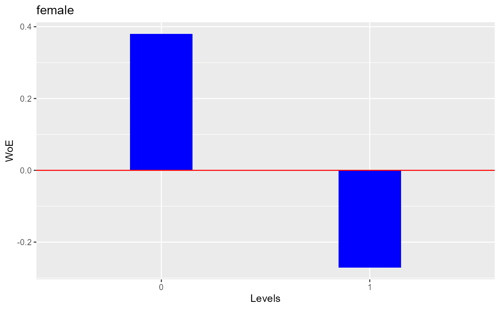

Weight of evidence and information value. Currently avialable for categorical predictors only.
Usage
blr_woe_iv(data, predictor, response, digits = 4, ...)
# S3 method for class 'blr_woe_iv'
plot(
x,
title = NA,
xaxis_title = "Levels",
yaxis_title = "WoE",
bar_color = "blue",
line_color = "red",
print_plot = TRUE,
...
)Arguments
- data
A
tibbleordata.frame.- predictor
Predictor variable; column in
data.- response
Response variable; column in
data.- digits
Number of decimal digits to round off.
- ...
Other inputs.
- x
An object of class
blr_segment_dist.- title
Plot title.
- xaxis_title
X axis title.
- yaxis_title
Y axis title.
- bar_color
Color of the bar.
- line_color
Color of the horizontal line.
- print_plot
logical; if
TRUE, prints the plot else returns a plot object.
References
Siddiqi N (2006): Credit Risk Scorecards: developing and implementing intelligent credit scoring. New Jersey, Wiley.
See also
Other bivariate analysis procedures:
blr_bivariate_analysis(),
blr_segment(),
blr_segment_dist(),
blr_segment_twoway(),
blr_woe_iv_stats()
Examples
# woe and iv
k <- blr_woe_iv(hsb2, female, honcomp)
k
#> Weight of Evidence
#> -------------------------------------------------------------------------
#> levels count_0s count_1s dist_0s dist_1s woe iv
#> -------------------------------------------------------------------------
#> 0 73 18 0.50 0.34 0.38 0.06
#> 1 74 35 0.50 0.66 -0.27 0.04
#> -------------------------------------------------------------------------
#>
#> Information Value
#> -----------------------------
#> Variable Information Value
#> -----------------------------
#> female 0.1023
#> -----------------------------
# plot woe
plot(k)
